Partial engine ASSY overhaul (detached / decomposition) |
| 1. Remove the spark plug |
| 2. engine hanger No.1 removal |
| 3. Remove thermostat |
Remove the two nuts and remove the water inlet.
Take off the thermostat.
Water -inlet housing gasket No.Remove 1.
| 4. Camshaft timing Oil control valve ASSY is removed |
| 5. Oil filler cap removal removal |
| 6. Remove the oil filler cap gasket |
| 7. Remove the crank position sensor |
| 8. Cylinder head cover SUB-ASSY |
| 9. Cylinder head cover gasket removal |
| 10. Remove the water pump pulley |
Use SST to fix the water pumpuri.
| 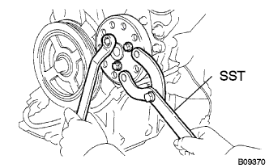 |
Remove the three bolts and remove the water pumpure.
| 11. The engine mounting bracket RH is removed |
| 12. Remove crankshaft Dampa SUB-ASSY |
No.1 Cylinder compression on a dead point set
Rotate the crankshaft damper correctly and match the timing mark (notch) to the 0 degree position of the chain cover.
| 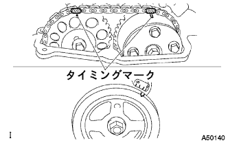 |
At this time, confirm that the timing mark of the camshaft timing gear is at the figure in the figure.
| 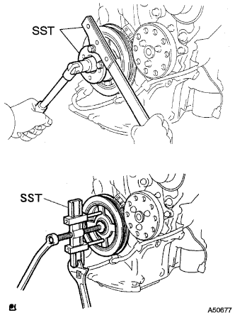 |
Fix the crankshaft dampa using SST and remove the bolt.
| 13. The engine water pump is removed |
Remove 3 bolts and two nuts and remove the water pump.
| 14. Oil pump ASSY removes |
Remove 15 bolts and nuts.
| 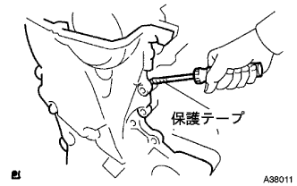 |
Use a flathead screwdriver with a protective tape to remove the oil pump ASSY in the position of the figure.
Remove the two O -rings.
Use Kisagon Lench 8 to the socket to remove the chain cover service hall sculp.
| 15. Remove the oil pump seal |
| 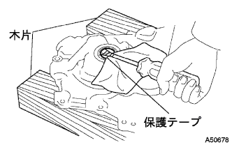 |
Use a flathead screwdriver with protective tape to remove the oil pump seal.
| 16. Chain tensioner ASSY No.1 removed |
Move the stopper plate up and push the plunger to the back with the lock unlocked.
Move the stopper plate down to lock, add the stopper plate and tensioner holes, and insert the hexagonal wrench.
| 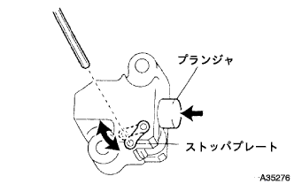 |
Remove the two bolts and remove the tensioner.
| 17. Remove the chain tensioner slippers |
| 18. Chain vibration Dampa No.1 |
Remove the two bolts and remove the chain vibration dampa.
| 19. Chain SUB-ASSY |
| 20. Chain SUB-ASSY inspection |
| 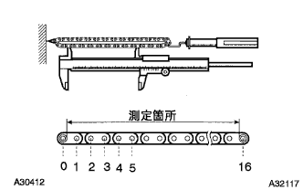 |
When the force of 140 N {14.3 kgf} is applied using only a spring, the length of the timing chain is measured.
| 21. Fuel delivery pipe SUB-ASSY removal |
Remove the three bolts and remove the fuel delivery pipe with an injector.
| 22. Fuel Injector ASSY removes |
Remove the injector from the delivery pipe.
| 23. Remove the cam position sensor |
| 24. Camshaft No.2 |
| 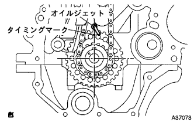 |
| 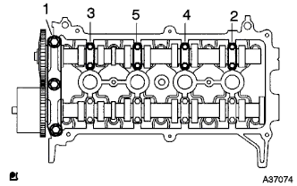 |
The camshaft bearing cap is removed in the order of the figure, and the camshaft No.Remove 2.
| 25. Camshaft timing gear or sprocket removed |
The hexagonal part for the camshaft service is fixed to the vise via an aluminum or other base.
Remove the flange bolt and remove the camshaft timing gear.
| 26. Remove the camshaft |
| 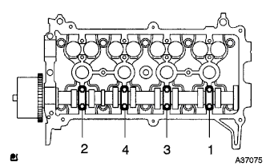 |
Remove the camshaft bearing cap in the order of the figure and remove the camshaft.
| 27. Camshaft timing gear ASSY inspection |
Lock status inspection
The hexagonal part for the camshaft service is fixed to the vise via an aluminum or other base.
Confirm that the camshaft does not turn.
Rock pin release
As shown in the figure, the four -journal oil hole is closed with a vinyl tape.
| 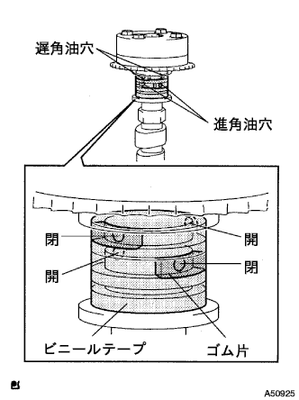 |
Open a hole in the vinyl tape that blocks the two areas (advanced oil holes, late -angle oil holes) on the other side.
| 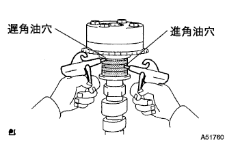 |
150 kpa {1.5 kgf / cm / cm / cm / cm in two holes (advanced oil holes, late -angle oil holes) drilled in vinyl tape2Add the level of air pressure.
| 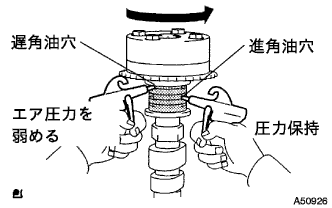 |
It is confirmed that the camshaft timing gear ASSY rotates in the angle direction when the air pressure on the late -angle oil hole side is weakened from the above state.
When the camshaft timing gear ASSY moves to the most advanced angle position, remove the air pressure on the late angle oil hole, and then remove the air pressure on the advanced oil hole.
Sliding confirmation
Camshaft timing gear ASSY is turned 2-3 rotations in the movable range [22.5 °] excluding the latest angle position to confirm that there is no abnormality in the sliding.
Late angle lock confirmation
Confirm that the camshaft timing gear ASSY locks and does not rotate at the latest angle position (the latest angle side of the movable end).
| 28. Camshaft timing gear ASSY removes |
Camshaft timing Gear ASSY is the most advanced angle position.
| 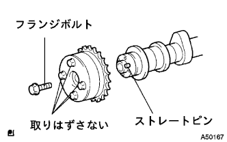 |
Remove the flange bolt and remove the camshaft timing gear ASSY.
| 29. Cylinder head SUB-ASSY |
| 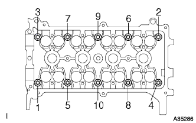 |
Use the double hexagon wrench 8 to share the cylinder head bolt into several times in the order of the figure, and remove the bolt and washer.
| 30. Remove cylinder head gasket |
| 31. Oil filter SUB-ASSY removes |
| 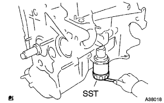 |
Use SST to remove the oil filter.
| 32. Remove the oil filter union |
Use the socket hexagon wrench 12 to remove the oil filter union.
| R33. Remove the engine rear oil seal |
Cut the lip of the oil seal with a cutter knife.
| 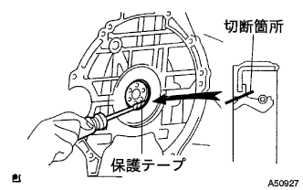 |
Use a flathead screwdriver with a protective tape to remove the oil seal.
| 34. Oil bread sub-assy No.2 removed |
Remove the oil panderen plug and gasket.
Remove 9 bolts and two nuts.
| 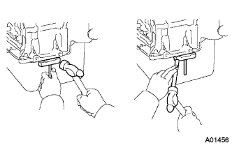 |
Using an oil pamphlet seal cutter, oil pan No.Remove 2.
| 35. Oil strainer SUB-ASSY |
Remove two bolts and nuts and remove the oil strainer and gasket.
| 36. Oil bread SUB-ASSY removed |
| 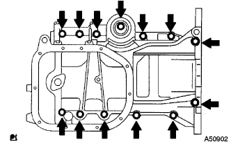 |
Remove 13 bolts.
| 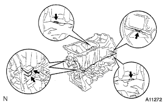 |
Use a flathead screwdriver to remove the oil pan by twisting the area in the figure.
Remove the two O -rings.
Use the Torxket wrench E5 to remove the four stud bolts.
| 37. Chain tensioner ASSY No.1 inspection |
With the cam and unlocked, press the plunger to make sure that it moves smoothly.
| 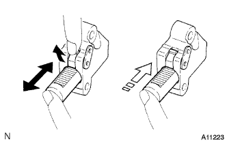 |
Confirm that even if you press the plunger while the cam lock is effective, it will not work.
| 38. Camshaft Timing Gear ASSY inspection |
Attach the chain to the timing gear.
| 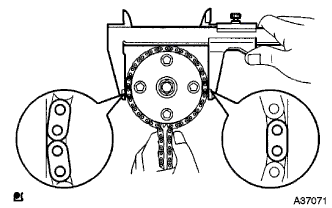 |
The outer diameter is measured using a caliper.
| 39. Camshaft timing gear or sprocket inspection |
Attach the chain to the timing gear.
| 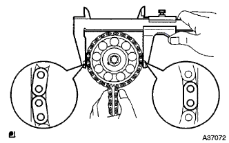 |
The outer diameter is measured using a caliper.
| 40. Chain tensioner slippers inspection |
| 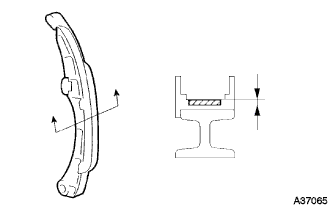 |
Use the caliper to measure the thickness of the chain tensioner slippers.
| 41. Chain vibration Dampa No.1 inspection |
| 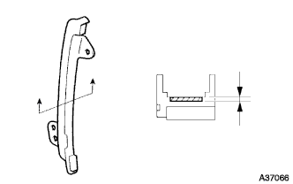 |
Use caliper to measure the thickness of the chain vibration dampa.
| 42. Cylinder head set bolt inspection |
| 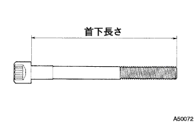 |
Use caliper to measure the headbolt length length.
| 43. Installation of oil bread SUB-ASSY |
Use Torxo Socket Wlench E5 to attach 4 stud bolts.
| 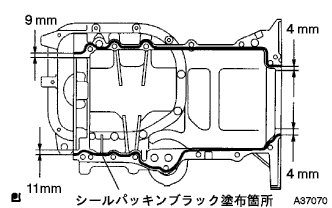 |
Apply a sticker packing black to the bead (2-3 mm in diameter) to the point in the figure.
Attach the two new O -rings to the cylinder block.
| 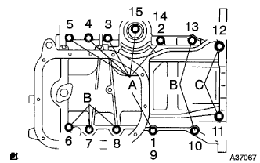 |
After temporary tightening of 13 bolts in several times in the order of the figure, tighten with a specified torque.
| 44. Installation of oil strainer SUB-ASSY |
Attach the oil strainer with two bolts and nuts via a new gasket.
| 45. Installation of oil bread sub-assy No.2 |
| 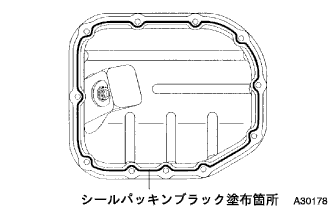 |
Apply a sticker packing black to the bead (diameter 2.5-3.5 mm) to the point in the figure.
9 bolts and two nuts, oil pan No.Attach 2.
Attach an oil panderen plug via a new gasket.
| 46. Installation of oil filter union |
Use a socket hexagon wrench 12 to attach an oil filter union.
| 47. Oil filter SUB-ASSY installation |
Remove dirt on the mounting surface and foreign substances on the engine side.
Apply a small amount of engine oil to the O -ring of the new oil filter.
Attach by hand until the O -ring hits the mounting surface.
Use SST to tighten 3/4 times.
| 48. Installation of cylinder head gasket |
| 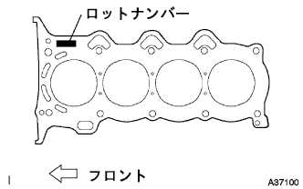 |
Attach the head gasket to the cylinder block so that the lot number is up.
| 49. Cylinder head SUB-ASSY installation |
Apply a sticker packing black (3.5-4.5 mm in diameter) to the point in the figure.
| 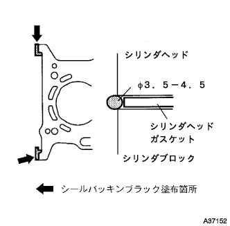 |
Apply a small amount of engine oil to the screw and seat of the cylinder head bolt.
| 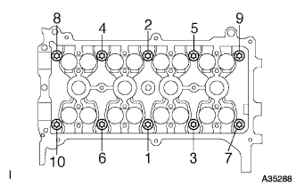 |
Use a double hexagon 8 wrench, temporarily tighten the cylinder head bolt in several times in the order of the figure, and then tighten it with a specified torque.
| 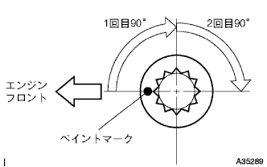 |
A paint mark is attached to the engine front side of the cylinder head bolt head.
Use the paint mark as a guide and tighten the cylinder head bolt 90 ° according to the tightening order.Furthermore, it is tightened by 90 ° according to the tightening order.
Confirm that all paint marks are at 180 ° tightened position.
| 50. Installation of engine rear oil seal |
A small amount of MP grease No.Apply 2.
| 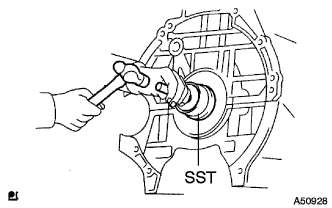 |
Use the SST to the oil sticker evenly to the end of the cylinder block.
| 51. Camshaft timing gear assessed |
For the straight pin of the camshaft, the key groove of the camshaft timing gear ASSY is shifted as shown in the figure.
Camshaft timing Gear is lightly rotated in the direction (left rotation) of the figure while pressing the gear ASSY, and further presses when the keys and straight pins match.
Check that there is no gap between the camshaft timing gear ASSY and the flange part of the camshaft.
Tighten the flange bolt while being careful not to rotate the camshaft timing gear.
| 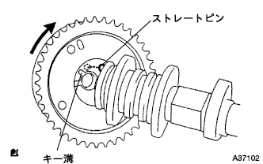 |
After tightening, confirm that the camshaft timing gear ASSY rotates and moves in the late angle direction (right rotation), and confirms that the camshaft timing gear ASSY locks at the movable end.
| 52. Installation of camshaft |
Apply engine oil to the camshaft cam and cylinder head journal.
Set the camshaft on the cylinder head so that the timing mark of the camshaft timing gear is on the upper side.
| 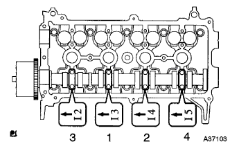 |
Bearing cap No.Check the front mark and numbers of 2, and then divide them into several times and tighten evenly.
| 53. Camshaft timing gear or sprocket installation |
The hexagonal part for the camshaft service is fixed to the vise via an aluminum or other base.
| 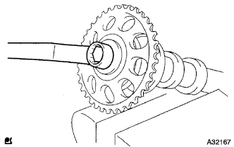 |
Camshaft No.Combine the knockpin of 2 and the pin groove of the camshaft timing gear and tighten it with a flange bolt.
| 54. Camshaft No.2 Installation |
Apply engine oil to the camshaft cam and cylinder head journal.
Camshaft No. so that the timing mark of the camshaft timing gear is on the upper sideSet 2 on the cylinder head.
| 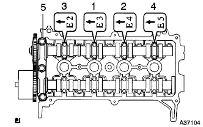 |
Bearing cap No.Check the front mark and numbers of 2, and then divide them into several times and tighten evenly.
Bearing cap No.Attach 1.
| 55.Cam position sensor installation |
Apply the engine oil to the O -ring.
Attach the cam position sensor with bolts.
| 56. Chain SUB-ASSY installation |
| 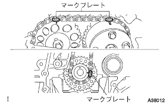 |
Attach the chain by matching the timing chain mark plate (yellow) in the position in the figure.
| 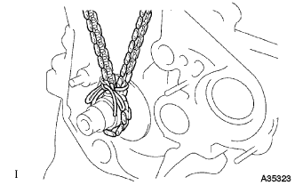 |
The chain is tied with a string near the crankshaft timing sprocket so that the mark plate and the timing mark do not shift.
Move the stopper plate up and push the plunger to the back with the lock unlocked.
Move the stopper plate down to lock, add the stopper plate and tensioner holes, and insert a hexagonal wrench.
Attach the chain tensioner ASSY with two bolts.
Attach the chain vibration dampa with two bolts.
Attach the chain tensioner slippers.
Draw a hexagonal wrench from the stopper plate of the chain tensioner ASSY.
Take off the string.
| 57. Installation of oil pump seals |
| 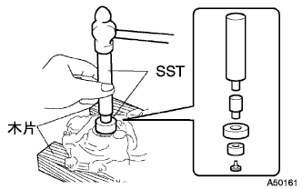 |
Use the SST to hit a new oil seal evenly to the end of the oil pump.
A small amount of MP grease No. on the oil seal lip partApply 2.
| 58. Oil pump assignment |
| 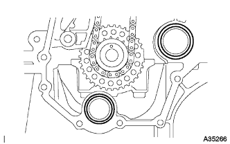 |
Attach a new O -ring to two places in the figure.
Apply a sticker packing to the engine body side and the area of the oil pump.
| 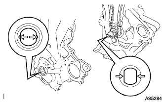 |
The oil pump is inserted into the crankshaft, according to the dramatic brotasplain part of the oil pump, according to the two -sided part of the crankshaft.
| 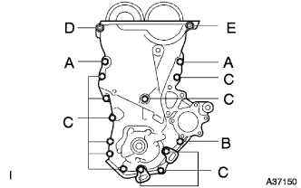 |
Attach the oil pump ASSY with 15 bolts and nuts as shown in the figure.
| 59. Installation of engine water tapples |
| 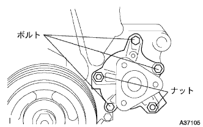 |
Attach a water pump ASSY with three bolts and two nuts via a new gasket.
| 60. Installation of engine mounting bracket RH |
| 61. Water pump pulley installation |
Use SST to fix the water pumpuri and tighten the three bolts.
| 62. Crankshaft Dampa SUB-ASSY installation |
Match the crankshaft Dampa hole to the crankshaft pin.
| 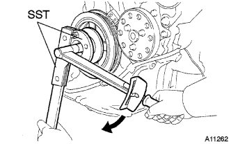 |
Fix the crankshaft dampa using SST and tighten the bolt.
| 63. Valve clearance inspection |
No.1 Cylinder compression on a dead point set
Rotate the crankshaft damper correctly and match the timing mark (notch) to the 0 degree position of the chain cover.
At this time, confirm that the timing mark of the camshaft timing gear is at the figure in the figure.
Inspect the valve clearance at the point in the figure.
| 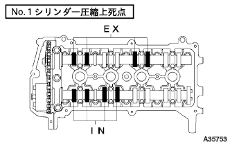 |
Use a chickness gauge to measure clearance between Valbrinkta and camshaft.
Rotate the crankshaft in the correct rotation direction and No.4. Change the cylinder at a compressed death point.
Inspect the valve clearance at the point in the figure.
| 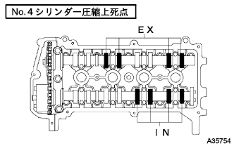 |
Use a chickness gauge to measure clearance between Valbrinkta and camshaft.
| 64. Valve clearance adjustment |
No.1 Cylinder compression on a dead point set
Rotate the crankshaft damper correctly and match the timing mark (notch) to the 0 degree position of the chain cover.
At this time, confirm that the timing mark of the camshaft timing gear is at the figure in the figure.
Apply paint mark to each plate of the chain corresponding to the timing mark of the camshaft timing gear.
Use the socket hexagon wrench 8 to remove the chain cover service hole plug.
Using a flathead screwdriver, hold the tensioner stopper plate from the chain tensioner service hall, and to come to the camshaft No.Using the hexagon for service 2, camshaft No.Rotate 2 to the right and make the tensioner plunger pressed.
The flathead screwdriver is removed from the chain tensioner service hall, and the stopper plate and tensioner holes are paired with the stopper plate down and the hexagonal wrench is inserted.
Camshaft No.The hexagon for service 2 is kept with a monkey wrench, etc., and the camshaft timing gear mounting bolt is loosened.
Remove the camshaft bearing cap in the order of the figure.
Camshaft No.With 2 floating 2, remove the flange bolt, and the camshaft No.2 And remove the camshaft timing gear.
Remove the camshaft bearing cap in the order of the figure.
Keep the timing chain by hand and remove the camshaft and camshaft timing gear ASSY.
Hang the timing chain with a rope or wire.
Remove the bulburifta.
Use a micrometer to measure the thickness of the removed Valbrifta.
Calculate the thickness of the valve bulft so that the valve clearance is the reference value.
| A | Select Valbrifta |
|---|---|
| B | The thickness of the barbrillifta that was removed |
| C | Measured valve clearance |
Select Valbrifta.
Attach the selected Valbrifta.
Apply engine oil to the camshaft cam and cylinder head journal.
The timing chain is kept by hand as shown in the figure, and the camshaft and camshaft timing gear ASSY are installed so that the mark plate of the timing chain matches the combination of the camshaft timing gear ASSY.
Bearing cap No.Check the front mark and numbers of 2, and then divide them into several times and tighten evenly.
The timing chain is held by hand as shown in the figure, and the mark plate of the timing chain matches the combination of the camshaft timing gear, the camshaft No.2 And attach camshaft timing gear.
Camshaft No.Combine the knockpin of 2 and the pin groove of the camshaft timing gear.
Temporarily attach the flange bolt.
Bearing cap No.Check the front mark and numbers of 2, and then divide them into several times and tighten evenly.
Bearing cap No.Attach 1.
Camshaft No.The hexagon for service 2 is kept in a monkey wrench, etc., and the camshaft timing gear mounting bolt is tightened.
Draw a hexagonal wrench from the chain tensioner.
Rotate the crank shaft pulley correctly and match the cutout of the crankshaft pulley to the 0 ° mark.
Confirm that each match mark matches.
Applied 1324 on the 2-3 screws from the bolt tip of the chain cover service holeskrug.
Use a socket hexagon wrench 8 to attach a chain cover service hall sculp.
| 65. Fuel Injector Assist installation |
Attach a new insulator and O -ring to the fuel angel.
Apply gasoline to the O -ring.
Attach the fuel injection to the fuel delivery pipe while rotating the fuel injector left and right.
| 66. Fuel delivery pipe SUB-ASSY installation |
Attach the delivery pipe spacer to the cylinder head.
Attach the delivery pipe w / injector with three bolts.
| 67. Cylinder head cover SUB-ASSY installation |
Attach a cylinder head cover gasket to the cylinder head cover.
Apply a sticker packing black to the position in the figure and attach the cylinder head cover.
Attach the cylinder head cover with 9 bolts and two nuts.
The bolt and nut are evenly tightened in the order of the figure.
| 68. Crank position sensor installation |
Apply the engine oil to the O -ring.
Attach the crank position sensor with bolts.
| 69. Installation of thermostat |
Attach a new gasket to the thermostat.
Attach the ziggle valve to the position of the figure.
Attach the water inlet with two nuts.
| 70. Camshaft Timing Oil Control Valve ASSY installation |
| 71. Spark plug installation |